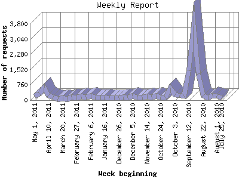

The Weekly Report identifies the activity for each week within the report
time frame. Remember that one page hit can result in several server requests
as the images for each page are loaded.
Note: Depending on the
report time frame for this report the first and last week may not represent
a full seven day week, resulting in lower hits.

| Week beginning | Number of requests | Number of page requests | |
|---|---|---|---|
| 1. | July 25, 2010 | 117 | 66 |
| 2. | August 1, 2010 | 200 | 65 |
| 3. | August 8, 2010 | 238 | 80 |
| 4. | August 15, 2010 | 117 | 44 |
| 5. | August 22, 2010 | 245 | 70 |
| 6. | August 29, 2010 | 1,321 | 84 |
| 7. | September 5, 2010 | 3,715 | 394 |
| 8. | September 12, 2010 | 1,489 | 132 |
| 9. | September 19, 2010 | 220 | 57 |
| 10. | September 26, 2010 | 243 | 101 |
| 11. | October 3, 2010 | 266 | 59 |
| 12. | October 10, 2010 | 587 | 71 |
| 13. | October 17, 2010 | 152 | 44 |
| 14. | October 24, 2010 | 163 | 59 |
| 15. | October 31, 2010 | 207 | 64 |
| 16. | November 7, 2010 | 140 | 64 |
| 17. | November 14, 2010 | 192 | 87 |
| 18. | November 21, 2010 | 161 | 56 |
| 19. | November 28, 2010 | 136 | 58 |
| 20. | December 5, 2010 | 209 | 68 |
| 21. | December 12, 2010 | 114 | 67 |
| 22. | December 19, 2010 | 150 | 72 |
| 23. | December 26, 2010 | 109 | 46 |
| 24. | January 2, 2011 | 115 | 48 |
| 25. | January 9, 2011 | 118 | 69 |
| 26. | January 16, 2011 | 151 | 86 |
| 27. | January 23, 2011 | 138 | 71 |
| 28. | January 30, 2011 | 152 | 48 |
| 29. | February 6, 2011 | 215 | 81 |
| 30. | February 13, 2011 | 134 | 60 |
| 31. | February 20, 2011 | 167 | 74 |
| 32. | February 27, 2011 | 117 | 50 |
| 33. | March 6, 2011 | 140 | 80 |
| 34. | March 13, 2011 | 69 | 29 |
| 35. | March 20, 2011 | 97 | 43 |
| 36. | March 27, 2011 | 71 | 29 |
| 37. | April 3, 2011 | 153 | 64 |
| 38. | April 10, 2011 | 247 | 81 |
| 39. | April 17, 2011 | 421 | 71 |
Most active week beginning September 5, 2010 : 394 pages sent. 3,715 requests handled.
Weekly average: 74 pages sent. 333 requests handled.
This report was generated on April 20, 2011 13:32.
Report time frame July 27, 2010 17:37 to April 19, 2011 18:51.
| Web statistics report produced by: analog 6.0 / Report Magic 2.21 |